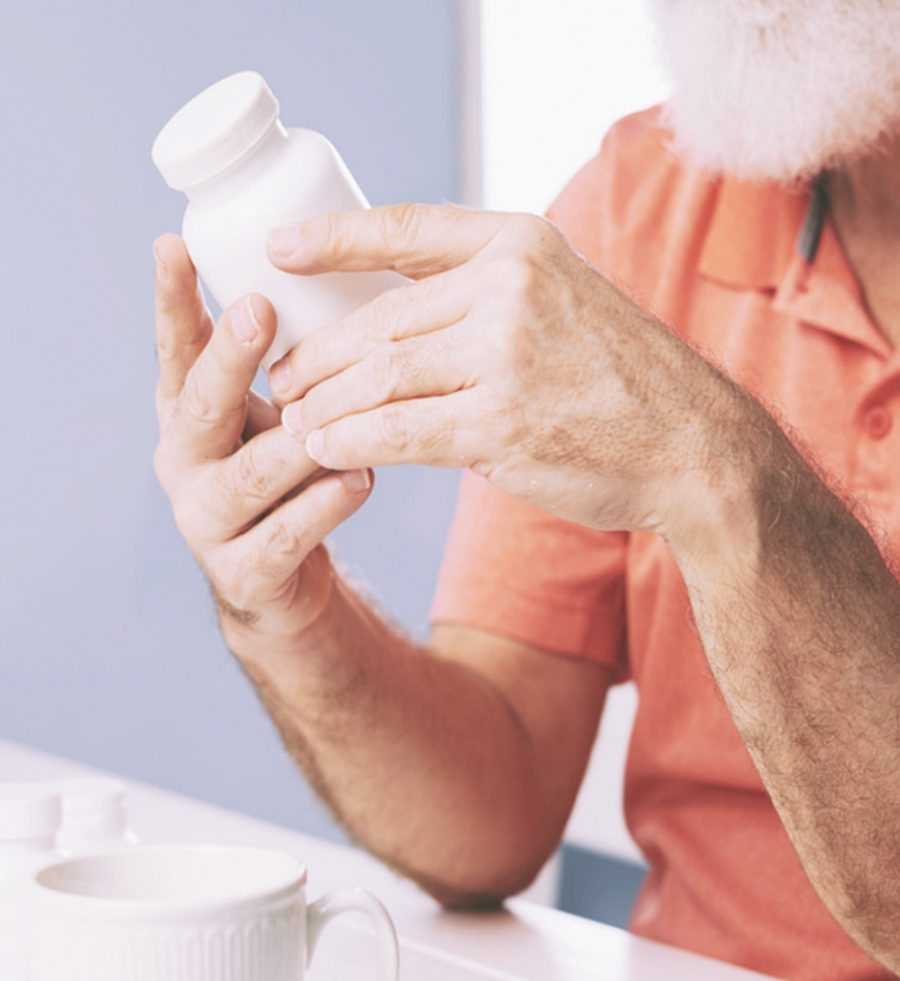

No tiene que ir a ninguna parte.
Díganos dónde surte sus recetas hoy. Nosotros nos encargamos del resto y sus medicamentos llegan a su puerta al día siguiente, o el mismo día si los necesita antes.
Atendemos los tres condados del sur de la Florida: Miami-Dade, Broward y Palm Beach — con entrega al día siguiente en su puerta. La entrega el mismo día está disponible cuando la necesita antes.
Basta una llamada
No necesita ver a su médico y nada cambia en su medicamento. Nosotros contactamos a su farmacia actual por usted.
-
Llámenos
Díganos su nombre, su fecha de nacimiento y dónde surte sus recetas ahora.
-
Nosotros hacemos la transferencia
Contactamos a su farmacia y trasladamos sus recetas. Usted no tiene que llamarlos.
-
Un farmacéutico revisa todo
Un farmacéutico licenciado revisa sus medicamentos antes de preparar nada.
-
Entregamos en su puerta
Por lo general al día siguiente, y gratis. Le enviamos un texto cuando va en camino.
Qué esperar
- Un mensaje de texto antes de que llegue para que sepa cuándo esperarnos.
- Entregado por nuestro propio equipo — no se deja en el correo.
- Puede solicitarse una firma para ciertos medicamentos.
- ¿No hay nadie en casa? Llámenos y coordinamos otro horario que le sirva.
- La entrega es gratis en toda nuestra zona de servicio en Miami-Dade, Broward y Palm Beach.
- Medicamentos refrigerados se empacan para mantenerse fríos en el camino.

Se lo ponemos más fácil de llevar
La mayoría de las personas que atendemos maneja ocho o más recetas. Todo lo que sigue existe para hacer eso más llevadero.
Resurtidos automáticos
Sus medicamentos de siempre se resurten solos, para que no se queden sin ellos.
Un día de entrega
Alineamos sus medicamentos para que lleguen juntos en vez de en momentos distintos.
Empaque por dosis y hora
Medicamentos organizados por día y hora, para que vea qué tomar y cuándo.
Recordatorios de texto
Un mensaje cuando llega el resurtido y cuando va en camino.
Etiquetas en su idioma
Etiquetas de receta impresas en inglés o español.
Ayuda con el costo
Si un medicamento es muy caro, díganos. Buscamos opciones de menor costo con su médico.
Aceptamos todos los planes principales de la Florida
Ascend Rx trabaja con todos los principales planes de seguro de la red de la Florida, con énfasis en Medicare Advantage. La entrega siempre es gratis. Si un medicamento cuesta más de lo que esperaba, llámenos: nuestros farmacéuticos pueden hablar con su médico sobre alternativas de menor costo y podemos informarle sobre programas de ayuda para los que quizá califique.
Preguntas que nos hacen seguido
¿Tengo que avisarle a mi médico que estoy cambiando?
No. Nosotros hacemos la transferencia con su farmacia actual. Su médico puede seguir enviando las recetas igual que siempre: nosotros le avisamos a dónde mandarlas.
¿Cuánto cuesta la entrega?
Nada. La entrega es gratis en toda nuestra zona de servicio en los condados de Miami-Dade, Broward y Palm Beach.
¿Qué tan rápido recibo mi medicamento?
La mayoría de las recetas llega a la puerta en menos de 24 horas. Si algo es urgente, díganos al llamar y haremos todo lo posible por entregárselo el mismo día.
¿Y los medicamentos que deben mantenerse fríos?
Manejamos medicamentos refrigerados con regularidad y los empacamos para que lleguen a la temperatura correcta.
¿Puedo recoger en persona?
Sí. Puede recoger en nuestra sede de Doral en horario de oficina. Llame antes para tener su receta lista.
¿Y si estoy de viaje o fuera de casa?
Llámenos antes de viajar. Muchas veces podemos surtir por adelantado o coordinar la entrega donde usted esté.
¿Hablan español?
Sí. Nuestro equipo contesta el teléfono en inglés y español, e imprimimos las etiquetas de receta en el idioma que prefiera.
¿A quién llamo si hay un problema con mi pedido?
Llámenos al (305) 455-1250 en horario de oficina y un miembro de nuestro equipo se encargará. Si tiene una emergencia médica, llame al 911.
Estamos para ayudarle
Llámenos de lunes a viernes, de 8:00 AM a 5:30 PM. Contestamos en inglés y español.
Llámenos
La vía más rápida para hablar con alguien de nuestro equipo.
(305) 455-1250Lunes a viernes, 8:00 AM – 5:30 PM
Fax seguro
Para recetas, listas de pacientes y expedientes.
(305) 655-1250Monitoreado en horario de oficina.
Correo electrónico
Solo para consultas generales y de alianzas.
pharmacy@rxascend.comPor favor no envíe información de pacientes por correo electrónico.
Por favor no envíe información de pacientes por correo electrónico. El correo electrónico no es una forma segura de enviar datos de medicamentos ni expedientes de salud. Llámenos al (305) 455-1250 o use nuestro fax seguro al (305) 655-1250. Si es una emergencia médica, llame al 911.